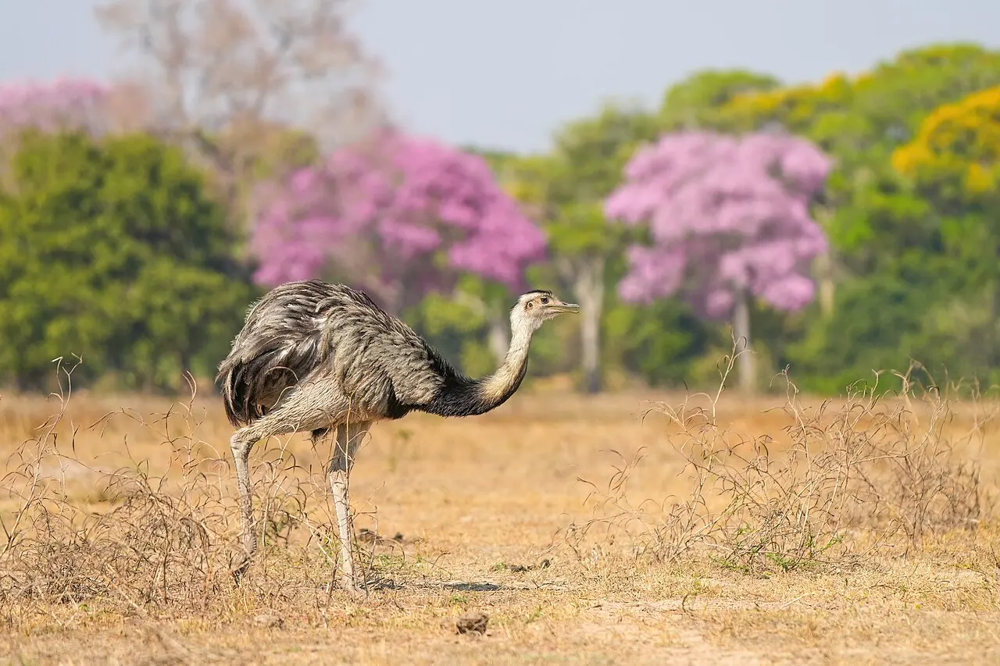
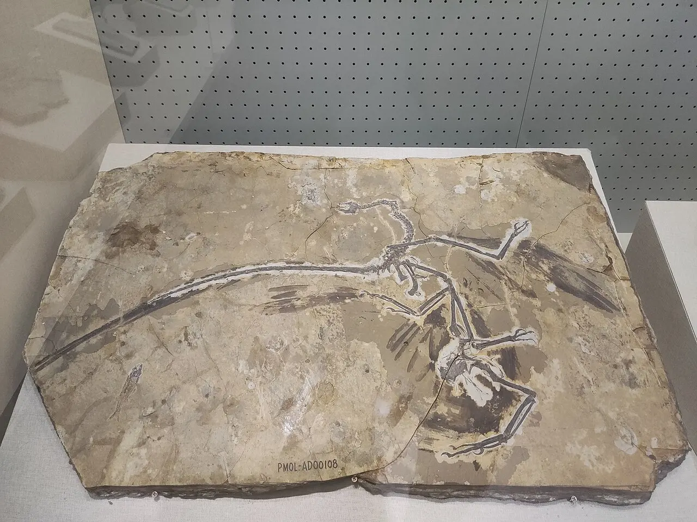
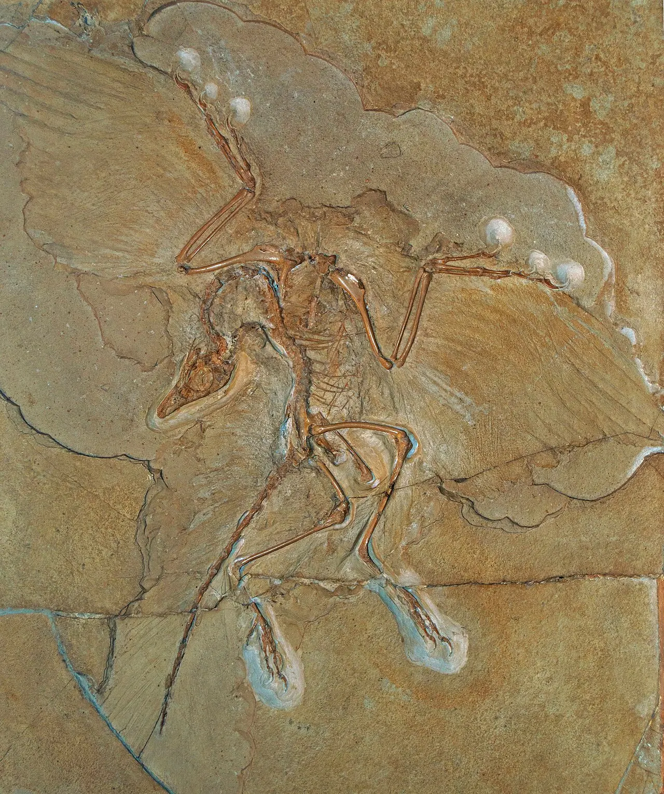

Módulo 5 Aula 24
De onde vieram
A pergunta “de onde vêm as aves” tem uma resposta que surpreende: das mesmas linhagens dos dinossauros. Os fósseis mostram o caminho.
- Por que se diz que as aves são dinossauros
- O que o Archaeopteryx mostra sobre a transição
- O que as aves atuais herdaram e o que mudou

Ave da aula
Ema Rhea americana
Uma ligação antiga
Hoje se considera que as aves atuais são dinossauros que sobreviveram: elas descendem de dinossauros carnívoros do grupo dos [3]. Vários dinossauros tinham penas ou estruturas parecidas com elas, como o Microraptor. Esses fósseis mostram que as penas surgiram em dinossauros antes das aves atuais[3]. Por isso ave e dinossauro compartilham tantos detalhes do esqueleto, como a fúrcula[2].

Archaeopteryx
O Archaeopteryx é um dos fósseis mais famosos, do fim do Jurássico. Tinha asas largas e penas, e o tamanho de uma pega, e por isso é considerado um fóssil “de transição”. Mas também tinha dentes afiados e uma cauda longa e óssea, coisas que nenhuma ave atual tem[1]. Segundo os pesquisadores da Universidade da Califórnia, ele é intermediário entre as aves que vemos hoje e dinossauros predadores como o Deinonychus[2]. Ainda se debate se ele voava de verdade ou apenas planava[1]: um estudo da geometria dos ossos das asas indica que ele tinha voo ativo, mas com uma batida diferente da das aves de hoje[4].

Antes e depois
Compare o que o Archaeopteryx tinha com o que as aves de hoje têm.
- BocaArchaeopteryx: dentes[2]. Aves atuais: bico de queratina, sem dentes[5].
- CaudaArchaeopteryx: longa e óssea[1]. Aves atuais: cauda curta, com o pigóstilo segurando as penas (aula 3).
- AsaArchaeopteryx: três garras na asa[2]. Aves atuais: mão reduzida e fundida em poucos ossos.
- PenasJá existiam no Archaeopteryx, com asas largas e emplumadas[1].
- FúrculaO Archaeopteryx já tinha, como as aves atuais[2].
Palavras novas
Teste rápido
Sem nota. Se errar, tente de novo.
As aves atuais descendem de que grupo?
O que o Archaeopteryx tinha que nenhuma ave atual tem?
O Archaeopteryx é chamado de fóssil de transição porque:
Referências e leitura complementar
Onde conferir o que foi dito nesta aula. Os números entre colchetes no texto levam a estas fontes. Os links abrem em outra aba.
- ArchaeopteryxNatural History Museum (Londres) · inglêsO fóssil, sua idade e características.
- ArchaeopteryxUCMP · Universidade da Califórnia, Berkeley · inglêsFicha do Archaeopteryx: dentes, cauda longa e penas de voo.
- Feathered dinosaurEncyclopaedia Britannica · inglêsDinossauros com penas e a ligação com as aves.
- Wing bone geometry reveals active flight in ArchaeopteryxPubMed Central (artigo científico) · inglês · leitura complementarEstudo científico sobre o voo do Archaeopteryx.
- Morphology of the AvesUCMP · Universidade da Califórnia, Berkeley · inglêsBico sem dentes, ossos ocos ligados aos sacos aéreos, quilha do esterno e fúrcula.
Os endereços foram abertos e conferidos em 29/09/2026. Alguns sites de revistas científicas e de órgãos oficiais exigem verificação humana e não puderam ser testados por robô. Sites externos podem mudar ou sair do ar.
Para levar
Em três frases
- As aves são dinossauros: pertencem a um grupo de dinossauros com penas, os terópodes.
- O Archaeopteryx, do fim do Jurássico, tinha penas de voo e asas, mas também dentes e cauda longa e óssea.
- Muitas características das aves de hoje, como penas e fúrcula, já apareciam em seus parentes fósseis.